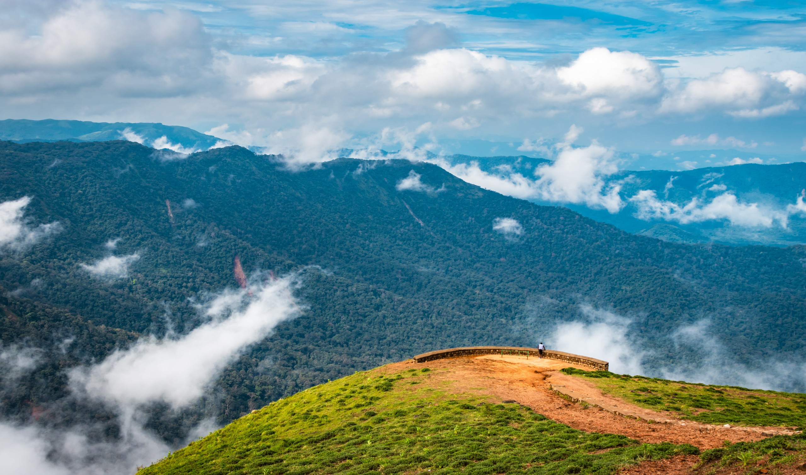
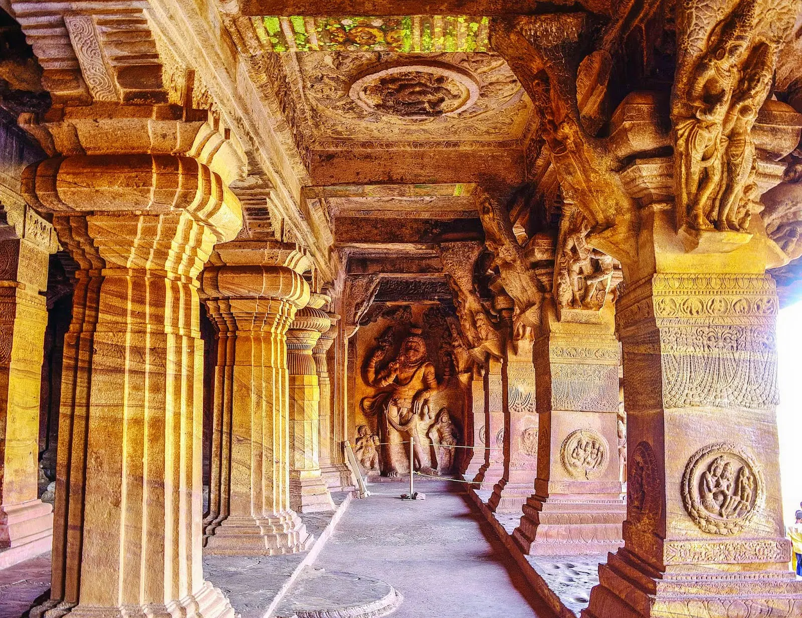
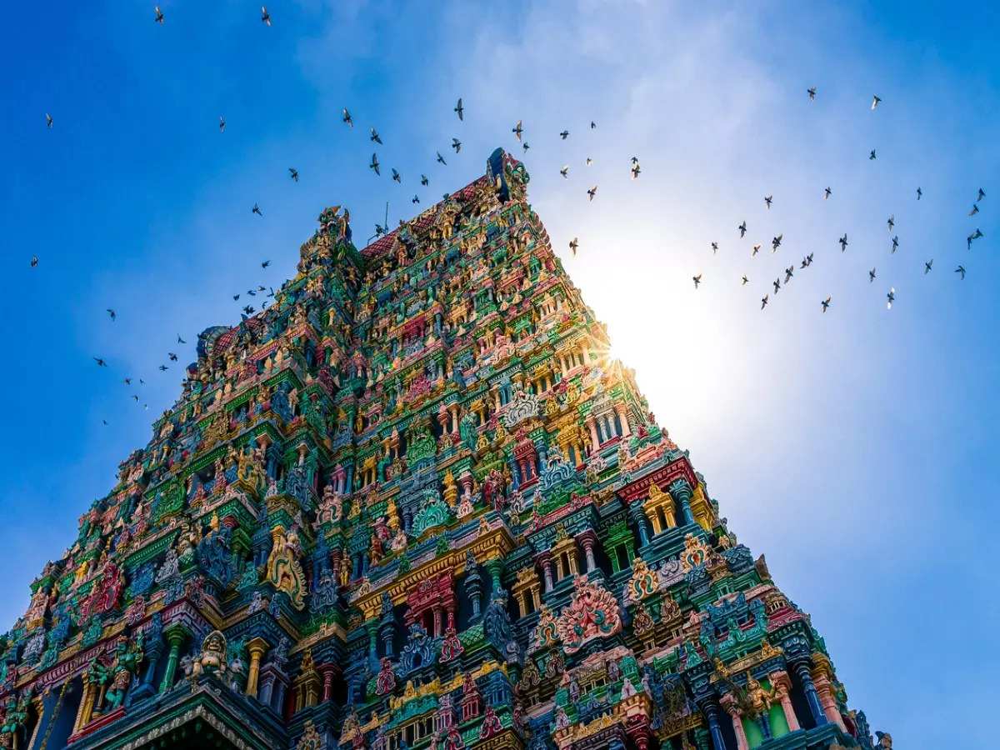
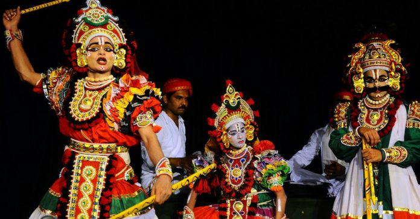
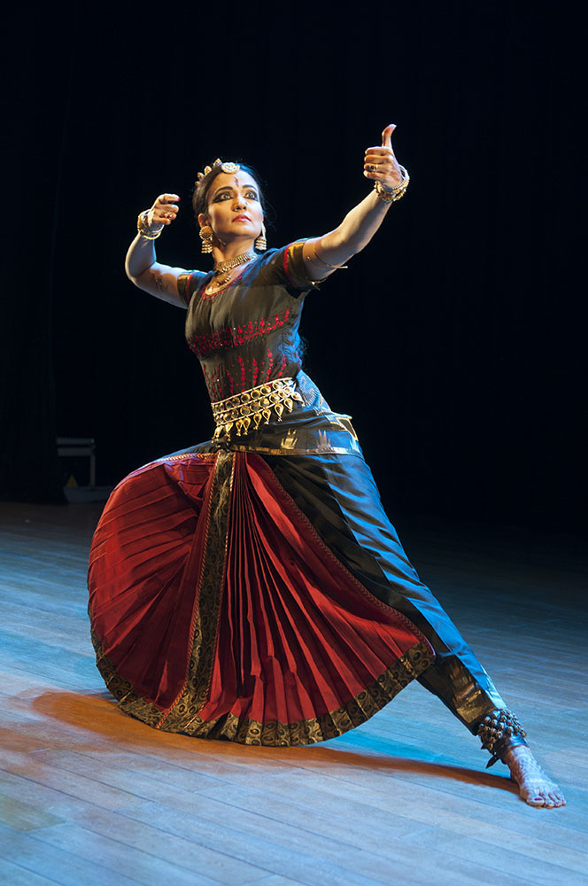
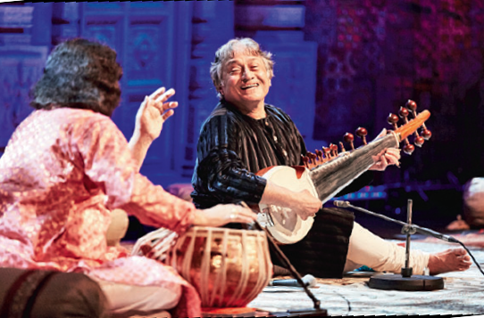
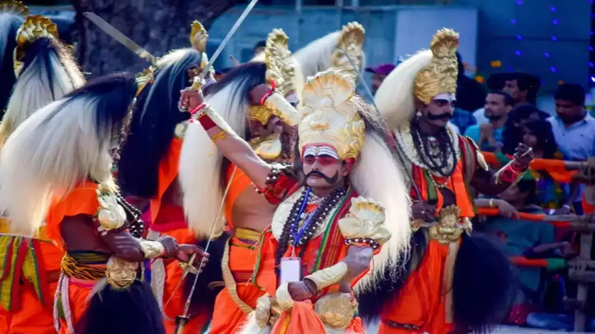

Famous Places in Karnataka
Karnataka boasts a variety of stunning locations, from historical sites to scenic beauty.
- Hampi - Ruins of the Vijayanagara Empire
- Mysore Palace - A royal palace known for its grandeur
- Coorg - Lush green hill station with coffee plantations 
- Badami Caves - Rock-cut cave temples with intricate carvings 

Hampi is located in the state of Karnataka in southwest India. It was the capital of the Vijayanagara Empire in the 14th-16th centuries. The Vijayanagara Empire was one of the largest and most powerful empires in Indian history. At its height in the 15th century, it controlled most of southern India.
It is situated on the banks of the Tungabhadra River in central Karnataka. It is about 350 km northwest of Bangalore, the capital of Karnataka. The nearest major city is Hospet, about 13 km away. Hospet is a hub for visiting Hampi.

Mysore Palace is located in Mysore, Karnataka. It was the official residence of the Wodeyar dynasty, the erstwhile royal family of Mysore. The current palace was constructed in 1897, after the old wooden palace was destroyed by fire. It was designed by the English architect Henry Irwin.
The Mysore Palace is illuminated by nearly 100,000 light bulbs on Sundays and public holidays, giving it a breathtaking night view. It is one of the most visited monuments in India, attracting over 6 million visitors annually. The palace continues to be a centerpiece of Mysore's cultural life. Mysore Palace is a proud testament to the Wodeyar dynasty's royal heritage and one of the finest examples of Indo-Saracenic architecture in India.
Coorg is a popular hill station located in the state of Karnataka, India. It sits at an average elevation of 1,525 meters above sea level in the Western Ghats mountain range.It is famous for its lush green landscapes, rolling hills, valleys, streams and waterfalls. The region has several protected forests and wildlife sanctuaries.
Coorg is the largest producer of coffee in India. The coffee plantations along with spice estates and orange groves cover large parts of the district. . The climate is pleasant throughout the year, though the best time to visit is from September to March. The average temperature ranges from 15°C to 20°C.
Coorg district is situated in the Western Ghats mountain range in the southwest part of Karnataka. It's located about 257 km from the state capital Bengaluru and 95 km from Mysuru. The nearest major city is Mangaluru which is around 135 km away from Coorg. Madikeri is the district headquarters and the largest town in Coorg. Other main towns include Virajpet and Kushalnagar.
Badami Caves are a complex of four Hindu, Jain and possibly Buddhist cave temples located in Badami, a town in the Bagalkot district of Karnataka, India. They are considered an outstanding example of Indian rock-cut architecture, especially Badrinath temple architecture. The caves are carved out of sandstone cliffs on the side of a hill, nearly 100 feet above the town. They overlook the Agastya lake reservoir.
Badami is situated about 80 km from Bijapur and 40 km from Aihole. It lies at the mouth of a ravine between two rocky hills. It is located on the Malaprabha river in the Bagalkot district of North Karnataka. The caves overlook the Agastya lake reservoir which lies between the two hills. The nearest major city is Hubli, which is around 130 km from Badami.The closest airport is Belgaum, about 150 km away. The nearest major railhead is at Gadag, which is 50 km from Badami. Badami can be reached by road via NH-50 which connects it to Bijapur, Hampi, and further to Bangalore and Mumbai. The Badami Caves complex is just east of the main town. It can be easily accessed by road and there are regular buses from the town to the caves.
Divine Destinations - Temples of Karnataka
Karnataka is a land of spiritual significance with many beautiful temples.
- Virupaksha Temple, Hampi - A UNESCO World Heritage Site
- Meenakshi Temple, Madurai - A Dravidian architectural marvel 
- Chennakeshava Temple, Belur - Hoysala dynasty temple with intricate carvings
- Kotilingeshwara Temple, Kolar - Temple with 1 crore (10 million) Shiva Lingas

The Virupaksha Temple is located in Hampi, in the state of Karnataka in India. It is part of the Group of Monuments at Hampi, which is a UNESCO World Heritage Site. The temple has a very long history, having been built in the 7th century AD. It is dedicated to Lord Shiva, known here as Virupaksha. The temple is built in the Dravidian architectural style. Over the centuries, the temple complex expanded with many additions made by successive rulers of the Vijayanagara Empire. The temple is noted for its tall gateway tower, known as the gopuram, which was built in the 16th century.
The temple remains an important pilgrimage site and a major attraction within the ruins of Hampi. Its history, architecture and religious significance make it a hugely significant monument. Let me know if you would like me to modify or expand the information in any other way. I can add more details about the temple's architecture, history, religious practices etc.
The Meenakshi Temple is located in the city of Madurai in the state of Tamil Nadu, India. It is an important Hindu temple dedicated to Goddess Meenakshi. The temple was originally built in the 6th century CE, but the present structure dates back to the 16th century. The temple has a striking D
ravidian architectural style with lofty gopurams (gateway towers) covered in bright colorful sculptures. The Meenakshi Temple complex is huge, covering over 45 acres. It is one of the largest temple complexes in India. The main shrines are dedicated to Meenakshi (Parvati) and her consort, Lord Shiva.The temple is considered an architectural marvel for its ornate pillars, intricate stone carvings, beautiful paintings and skilled craftsmanship. Over 33,000 sculptures adorn the temple walls, columns and ceilings. The Meenakshi Temple remains an active house of worship and sees thousands of devotees and pilgrims every day. It is both a hugely important religious site as well as a major tourist attraction in Madurai. Let me know if you would like me to add or modify any details about the temple's history, architecture, significance, etc. I'm happy to expand the information further.

The Chennakeshava Temple is located in the town of Belur, in the Hassan district of Karnataka. It was built in the 12th century CE by the Hoysala Empire King Vishnuvardhana. The temple is dedicated to the Hindu god Vishnu and is a fine example of Hoysala architecture. It features intricate exterior stone carvings and sculpture work, reflecting the skilled craftsmanship of the Hoysala artists. The temple stands on a star-shaped platform and is made of soapstone. The walls of the temple are covered in elaborate friezes depicting various Hindu deities, scenes from the epics, dancing figures and more.
The most notable feature of the Chennakeshava Temple is its beautifully carved pillars, which exhibit decorative articulation and dynamism. The temple interiors also have carved ceilings and polished pillars. The Chennakeshava Temple is a testament to the artistic brilliance of the Hoysala dynasty. Its elaborate sculptural embellishment makes it one of the finest examples of Hoysala art and architecture. Let me know if you would like me to modify or add any other details about the temple's history, architecture, or significance. I'm happy to expand on this further.

The Kotilingeshwara Temple is located in the town of Kolar in the state of Karnataka, India. It is most renowned for containing the largest number of lingams (an iconic representation of the Hindu deity Shiva). The temple has around 1 crore (10 million) small lingams and hence gets its name as Kotilingeshwara (koti meaning crore). The lingams are installed in the temple courtyard and some are even on the walls and pillars of the temple. The legend behind the temple states that the lingams were installed and worshipped by Parasurama, an avatar of Vishnu. The lingams are made of a type of clay found in a tank near the temple.
In the inner sanctum of the temple is a 35 foot tall Shiva lingam made of granite. The main lingam is said to be swayambhu (self-manifested) and is worshipped devotedly by pilgrims. The Kotilingeshwara Temple attracts thousands of devotees every year, especially during Maha Shivaratri. The temple is considered one of the most impressive Shiva temples in South India. Let me know if you would like me to modify or add any other details about this temple in Kolar.
Experience Karnataka's Rich Culture
Karnataka's vibrant culture offers a glimpse into its traditions and heritage.
- Yakshagana - A colorful folk theatre form with elaborate costumes and masks 
- Bharatanatyam - A classical Indian dance form known for its grace and storytelling 
- Karnataka Carnatic Music - A complex and melodic form of Indian classical music 
- Mysore Dasara - A grand festival celebrating victory with parades and rituals 
Yakshagana is a traditional theater form originating from the state of Karnataka in India. It is known for its elaborate costumes, masks, face paint, dance, and music. Performers wear heavy headgears, flowing costumes and stylized facial make-up. Intricate masks depicting gods, demons, animals and other characters are worn during the dance-drama. Yakshagana plays are based on Hindu epics and mythologies. The plays typically begin late at night, going through the night into the early morning hours. Yakshagana is performed with percussion instruments like chenda, maddalam and cymbals.
Yakshagana involves dance, dialogue, costume-play, oratory, music and songs. It is considered a highly skilled art form, passed down traditionally through generations. Yakshagana troupes travel to temple festivals and fairs to perform. The vibrant costumes, music and energetic performances make Yakshagana appealing for both locals and tourists. Let me know if you would like me to modify or add any other details about this colorful folk theater tradition!
Bharatanatyam is a classical dance form that originated in the Indian state of Tamil Nadu. Known for its grace, purity, tenderness and sculpturesque poses, Bharatanatyam is one of the most popular and widely performed dance styles in India. The dance form denotes various 19th and 20th century reconstructions of Sadir, the art of temple dancers called Devadasis. Bharatanatyam includes rhythmic foot movements organized into various adavus, symbolic hand gestures and facial expressions. Traditional Bharatanatyam performances often enact stories through expressive dance and mime. The repertoire includes spiritual themes from Hindu mythology as well as more abstract elements. Dance is accompanied by musical instruments like the mridangam, nadaswaram and cymbals.
The costumes and jewelry worn by Bharatanatyam dancers are often ornate and colorful. The intricacy of the steps and attention to detail requires rigorous training to master the dance form. Bharatanatyam remains one of India's most refined classical arts, lending itself beautifully to both solo and group performances. Let me know if you would like me to modify or add any other information about Bharatanatyam and its history, costumes, repertoire etc.